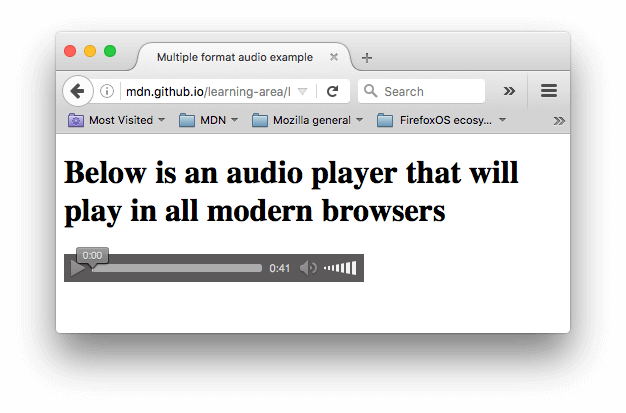

Элемент <audio>
Элемент <audio> работает точно так же, как элемент <video>, с несколькими небольшими отличиями, которые описаны ниже. Типичный пример может выглядеть так:
<audio controls>
<source src="viper.mp3" type="audio/mp3">
<source src="viper.ogg" type="audio/ogg">
<p>Your browser doesn't support HTML5 audio. Here is a <a href="viper.mp3">link to the audio</a> instead.</p>
</audio>В браузере это вызывает следующее:
Примечание: вы можете запустить аудио-демо в Github (см. также исходный код аудиоплеера.)
Он занимает меньше места, чем видеоплеер, поскольку нет визуального компонента - вам просто нужно отображать элементы управления для воспроизведения звука. Другие отличия от видео HTML5 заключаются в следующем:
- Элемент
<audio>не поддерживает атрибутыwidthиheight- опять же, нет визуального компонента, поэтому присваивать ширину или высоту не к чему. - Он также не поддерживает атрибут
posterопять же, из-за отсутствия визуального компонента.
Помимо этого, <audio> поддерживает все те же функции, что и <video> - просмотрите приведённые выше разделы для получения дополнительной информации о них.